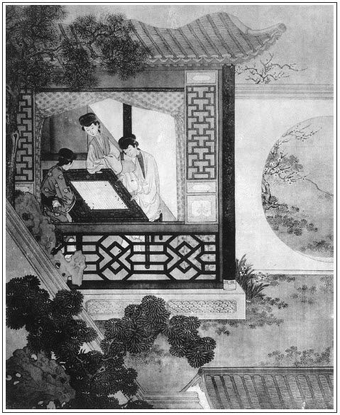

張回此回單敘蕙蓮乏怙寵也。夫主意單寫蕙蓮，而用筆亦單寫蕙蓮，便成呆筆。上文金蓮、玉樓、瓶兒、春梅俱未呆寫，後文若干人亦俱未呆筆，此文又何肯呆寫？則知「賭棋枰」，又不得不然之生法穿插也。然而玉樓、金蓮、瓶兒相聚一處，其消閒永晝，逐隊成團，一堂春色，又不得不加一番描寫，不必待「鞭靶」一回方始總描之也。早於吃車輪酒時一一描其勝滿之極矣。過此數回，至「生子」後，則金、瓶永不復合矣。故此處一描，為萬不可少。
「覷藏春」，見蕙蓮小人之底裡皆動。而金蓮潛蹤，已伏一勢不兩立之根，次早略使權術，遂使西門對蕙蓮無以自解。而蕙蓮之不心貼西門，已安一皮根。後文屋層變卦，愈滋悲憤，遂致捐軀而不顧也。然而金蓮之惡，已盈於不言之中矣。
寫聽籬察壁，固是金蓮本性，而一聽即著，愈使後文一步不肯松也。妒婦之不容人，大半怕人如此。又與「翡翠軒」作引子矣。
後文寫玳安、寫賁四，皆描寫蕙蓮淫蕩輕狂，以致人人皆知，為來旺「醉罵」之由也。又見輕佻淺露，特特與春梅相反，以結果之不如也。
於未見金蓮前，卻橫插一平安。一者映出蕙蓮，一者為妒書僮受報作伏。小人輕言取禍，往往如此。
詞曰：
心中難自洩，暗裡深深謝。張夾一轉。未必娘行，恁地能賢哲。張夾又一轉。衷腸怎好和君說？張夾又一轉。
說不願丫頭，願做官人的侍妾。張夾又一轉。他堅牢望我情真切。豈想風波，果應了他心料者。張夾又一轉。
──右調《梧桐樹》

話說一日臘盡春回，新正佳節，西門慶賀節不在家，吳月娘往吳大妗子家去了。午間孟玉樓、潘金蓮都在李瓶兒房裡下棋。玉樓道：「咱們今日賭甚麼好？」金蓮道：「咱們賭五錢銀子東道，三錢銀子買金華酒兒，那二錢買個豬頭來，教來旺媳婦子燒豬頭咱們吃。說他會燒的好豬頭，只用一根柴禾兒，燒的稀爛。」張夾映蔣聰。玉樓道：「大姐姐不在家，卻怎的計較？存下一分兒，送在他屋裡，也是一般。」說畢，三人下棋。下了三盤，李瓶兒輸了五錢。繡旁自然是他。金蓮使繡春兒叫將來興兒來，把銀子遞與他，教他買一壇金華酒，一個豬首，連四隻蹄子，吩咐：「送到後邊廚房裡，教來旺兒媳婦蕙蓮快燒了，拿到你三娘屋裡等著，我們就去。」玉樓道：「六姐，教他燒了拿盒子拿到這裡來吃罷。在後邊，李嬌兒、孫雪娥兩個看著，是請他不請他？」繡眉沒一些要緊，說來卻是婦人極要緊心事。專從冷處摹情，使人不測。金蓮遂依玉樓之言。
不一時，來興兒買了酒和豬首，送到廚下。蕙蓮正在後邊和玉簫在石台基上坐著，撾瓜子耍子哩。來興兒便叫他：「蕙蓮嫂子，五娘、三娘都上覆你，使我買了酒、豬頭連蹄子，都在廚房裡，教你替他燒熟了，送到前邊六娘房裡去。」蕙蓮道：「我不得閒，與娘納鞋哩。隨問教那個燒燒兒罷，巴巴坐名兒教我燒？」來興兒道：「你燒不燒隨你，交與你，我有勾當去。」說著，出去了。玉簫道：「你且丟下，替他燒燒罷。你曉的五娘嘴頭子，又惹的聲聲氣氣的。」張夾是同事之人。蕙蓮笑道：「五娘怎麼就知道我會燒豬頭，栽派與我！」於是起到大廚灶裡，舀了一鍋水，把那豬首蹄子剃刷乾淨，只用的一根長柴禾安在灶內，用一大碗油醬，並茴香大料，拌的停當，上下錫古子扣定。那消一個時辰，把個豬頭燒的皮脫肉化，香噴噴五味俱全。將大冰盤盛了，連姜蒜碟兒，用方盒拿到前邊李瓶兒房裡，旋打開金華酒來。玉樓揀齊整的，留下一大盤子，並一壺金華酒，使丫頭送到上房裡，與月娘吃。其餘三人坐定，斟酒共酌。
正吃中間，只見蕙蓮笑嘻嘻走到跟前，說道：「娘們試嘗這豬頭，今日燒的好不好？」金蓮道：「三娘剛才誇你倒好手段兒！燒的且是稀爛。」李瓶兒問道：「真個你只用一根柴禾兒？」蕙蓮道：「不瞞娘們說，還消不得一根柴禾兒哩！若是一根柴禾兒，就燒的脫了骨。」玉樓叫繡春：「你拿個大盞兒，篩一盞兒與你嫂子吃。」李瓶兒連忙叫繡春斟酒，他便取碟兒揀了一碟豬頭肉兒遞與蕙蓮，說道：「你自造的，你試嘗嘗。」蕙蓮道：「小的自知娘們吃不的鹹，沒曾好生加醬，胡亂罷了。下次再燒時，小的知道了。」繡眉又奉承，又賣嘴，又討好。便磕了三個頭，方才在桌頭旁邊立著，做一處吃酒。
到晚夕月娘來家，眾婦人見了月娘，小玉悉將送來豬頭，拿與月娘看。玉樓笑道：「今日俺們下棋耍子，贏的李大姐豬頭，留與姐姐吃。」月娘道：「這般有些不均了。各人賭勝，虧了一個就不是了。咱們這等計較：只當大節下，咱姊妹這幾人每人輪流治一席酒兒，叫將郁大姐來，晚間耍耍，有何妨礙？強如賭勝負，難為一個人。我主張的好不好？」眾人都說：「姐姐主張的是！」月娘道：「明日初五日，就是我起先罷。」李嬌兒佔了初六，玉樓佔了初七，金蓮佔了初八。金蓮道：「只我便宜，那日又是我的壽酒，卻一舉而兩得。」問著孫雪娥，孫雪娥半日不言語。繡旁畫。月娘道：「他罷，你們不要纏他了，教李大姐挨著罷。」玉樓道：「初九日又是六姐生日，只怕有潘姥姥和他妗子來。」月娘道：「初九日不得閒，教李大姐挪在初十罷了。」眾人計議已定。
話休絮煩。先是初五日，西門慶不在家，往鄰家赴席去了。月娘在上房擺酒，郁大姐供唱，請眾姐妹歡飲了一日方散。到第二日，卻該李嬌兒，就挨著玉樓、金蓮，都不必細說。須臾，過了金蓮生日，潘姥姥、吳大妗子，都在這裡過節頑耍。
看看到初十日，該李瓶兒擺酒，使繡春往後邊請雪娥去。一連請了兩替，答應著來，只顧不來。繡旁元可厭。張眉寫雪娥處卻是襯蕙蓮，又為向來旺學舌伏線。玉樓道：「我就說他不來，李大姐只顧強去請他。可是他對著人說的：『你每有錢的，都吃十輪酒兒，沒的俺們去赤腳絆驢蹄。』似他這等說，俺們罷了，把大姐姐都當驢蹄看承！」繡眉雪娥品卑，自難入群，玉樓苛求之也。張夾惡。月娘道：「他是恁不成材的行貨子，都不消理他了，又請他怎的！」於是擺上酒來，眾人都來前邊李瓶兒房裡吃酒。郁大姐在旁彈唱。當下，吳大妗子和西門大姐，共八個人飲酒。只因西門慶不在，月娘吩咐玉簫：「等你爹來家要吃酒，你打發他吃就是了。」張旁兩次寫月娘命玉蕭深情，隱筆。玉簫應諾。
後晌時分，西門慶來家，玉簫替他脫了衣裳。西門慶便問：「娘往那去了？」玉簫回道：「都在六娘房裡和大妗子、潘姥姥吃酒哩。」西門慶問道：「吃的是甚麼酒？」玉簫道：「是金華酒。」西門慶道：「還有年下你應二爹送的那一壇茉莉花酒，打開吃。」一面教玉簫把茉莉花酒打開，西門慶嘗了嘗，說道：「正好你娘們吃。」教小玉、玉簫兩個提著，送到前邊李瓶兒房裡。蕙蓮正在月娘旁邊侍立斟酒，見玉簫送酒來，蕙蓮俐便，連忙走下來接酒。玉簫便遞了個眼色與他，向他手上捏了一把，繡旁純是白描。這婆娘就知其意。月娘問玉簫：「誰使你送酒來？」玉簫道：「爹使我來。」月娘道：「你爹來家多大回了？」玉簫道：「爹剛才來家。因問娘們吃酒，教我把這一壇茉莉花酒，拿來與娘們吃。」月娘問：「你爹若吃酒，房中放桌兒，有見成菜兒打發他吃。」玉簫應的，往後邊去了。
這蕙蓮在席上站了一回，推說道：「我後邊看茶來，與娘們吃。」月娘吩咐道：「對你姐說，上房揀妝裡有六安茶，頓一壺來俺們吃。」這老婆一個獵古調走到後邊，玉簫站在堂屋門首，努了個嘴兒與他。老婆掀開簾子，進月娘房來，只見西門慶坐在椅子上吃酒。走向前，一屁股就坐在他懷裡，繡眉分明逞嬌態，卻寫得帶三分粗莽氣，妙甚。兩個就親嘴咂舌做一處。婆娘一面用手揝著他那話，一面在上噙酒哺與他吃。便道：「爹，你有香茶再與我些，前日與我的都沒了。我少薛嫂兒幾錢花兒錢，你有銀子與我些兒。」繡眉開口便討東西，討又不多，自不是多情美人舉止。張夾變全以利。西門慶道：「我茄袋內還有一二兩，你拿去。」說著。西門慶要解他褲子。婦人道：「不好，只怕人來看見。」西門慶道：「你今日不出去，晚夕咱好生耍耍。」蕙蓮搖頭說道：「後邊『惜薪司擋路兒──柴眾』。咱不如還在五娘那裡，色絲子女。」於是玉簫在堂屋門首觀風，由他二人在屋裡做一處頑耍。
不防孫雪娥從後來，聽見房裡有人笑，只猜玉簫在房裡和西門慶說笑，不想玉簫又在穿廊下坐的，就立住了腳。玉簫恐怕他進屋裡去，便支他說：「前邊六娘請姑娘，怎的不去？」雪娥鼻子裡冷笑道繡旁畫。：「俺們是沒時運的人兒，繡旁難說。騎著快馬也趕他不上，拿甚麼伴著他吃十輪酒兒？自己窮的伴當兒伴的沒褲兒！」正說著，被西門慶房中咳嗽了一聲，雪娥就往廚房裡去了。
這玉簫把簾子欣開，婆娘見無人，急伶俐兩三步就扠出來，繡旁行動是個媳婦子，妙。往後邊看茶去。須臾，小玉從後邊走來叫：「蕙蓮嫂子，娘說你怎的取茶就不去了？」婦人道：「茶有了，著姐拿果仁兒來。」不一時，小玉拿著盞托，他提著茶，一直來到前邊。月娘問道：「怎的茶這咱才來？」蕙蓮道：「爹在房裡吃酒，小的不敢進去。繡眉雖假撇清，卻有滿肚皮賣弄意，忍不住忽然說出。張夾人言難信。等著姐屋裡取茶葉，剝果仁兒來。」眾人吃了茶，這蕙蓮在席上，斜靠桌兒站立，看著月娘眾人擲骰兒，故作揚聲說道：「娘，把長幺搭在純六，卻不是天地分？還贏了五娘。」又道：「你這六娘，骰子是錦屏風對兒。我看三娘這麼三配純五，只是十四點兒，輸了。」被玉簫惱了，說道：「你這媳婦子，俺們在這裡擲骰兒，插嘴插舌，有你甚麼說處？」把老婆羞的站又站不住，立又立不住，緋紅了面皮，往下去了。繡旁羞得妙。正是：
誰人汲得西江水，難洗今朝一面羞。
這裡眾婦人飲酒，至掌燈時分，只見西門慶掀簾子進來，笑道：「你們好吃！」吳大妗子跳起來，說道：「姐夫來了！」連忙讓座兒與他坐。月娘道：「你在後邊吃酒罷了，女婦男子漢，又走來做甚麼？」張眉上段推其顛寒作熱，下段寫其停眠整宿。西門慶道：「既是恁說，我去罷。」於是走過金蓮這邊來，金蓮隨即跟了來。西門慶吃得半醉，拉著金蓮說道：「小油嘴，我有句話兒和你說。我要留蕙蓮在後邊一夜兒，後邊沒地方。看你怎的容他在你這邊歇一夜兒罷？」金蓮道：「我不好罵的，沒的那汗邪的胡亂！隨你和他那裡㒲搗去，好嬌態，教他在我這裡！我是沒處安放他。我就算依了你，春梅賊小肉兒他也不容。繡眉又為春梅作聲價。張夾又點春梅。你不信，叫了春梅問他，他若肯了，我就容你。」西門慶道：「既是你娘兒們不肯，罷！我和他往山子洞兒那裡過一夜。你吩咐丫頭拿床鋪蓋，生些火兒。不然，這一冷怎麼當。」金蓮忍不住笑了：「我不好罵出你來的，賊奴才淫婦，他是養你的娘？你是王祥，寒冬臘月行孝順，在那石頭床上臥冰哩。」繡眉忽想到山洞中，又作一段嬉笑，令人絕倒。西門慶笑道：「怪小油嘴兒，休奚落我。罷麼，好歹叫丫頭生個火兒。」金蓮道：「你去，我知道。」當晚眾人席散，金蓮吩咐秋菊，果然抱鋪蓋、籠火，在山子底下藏春塢雪洞裡。蕙蓮送月娘、李嬌兒、玉樓進到後邊儀門首，故意說道：「娘，小的不送，往前邊去罷。」月娘道：「也罷，你前邊睡去罷。」這婆娘打發月娘進內，還在儀門首站立了一回，張旁正為忘關角門反照。見無人，繡旁寫出久慣。一溜煙往山子底下去了。正是：
莫教襄王勞望眼，巫山自送雨雲來。
這宋蕙蓮走到花園門首，只說西門慶還未進來，繡旁漏空得妙。就不曾扣角門子，張夾角門一。只虛掩著。來到藏春塢洞兒內，只見西門慶早在那裡秉燭而坐。婆娘進到裡面，但覺冷氣侵人，塵囂滿榻。於是袖中取出兩枝棒兒香，燈上點了，插在地下。雖故地下籠著一盆碳火兒，還冷的打兢。婆娘在床上先伸下鋪，上面還蓋著一件貂鼠禪衣。掩上雙扉，兩個上床就寢。西門慶脫去上衣白綾道袍，坐在床上，把婦人褪了褲，抱在懷裡，兩隻腳蹺在兩邊，那話突入牝中。兩個摟抱，正做得好。卻不防潘金蓮打聽他二人入港了，在房中摘去冠兒，輕移蓮步，悄悄走來竊聽。到角門首，推開門，張夾角門二。遂潛身悄步而入。也不怕蒼苔冰透了凌波，花刺抓傷了裙褶，躡跡隱身，在藏春塢月窗下站聽。繡眉悄悄冥冥，寫出美人行徑，自與蕙蓮之「兩三步」、「一溜煙」天壤矣，作者細心如此。良久，只見裡面燈燭尚明，婆娘笑聲說：張夾如聞其聲。「冷鋪中捨冰，把你賊受罪不濟的老花子，繡旁口角妙。就沒本事尋個地方兒，走在這寒冰地獄裡來了！口裡銜著條繩子，凍死了往外拉。」又道：「冷合合的，睡了罷，怎的只顧端詳我的腳？你看過那小腳兒的來，像我沒雙鞋面兒，那個買與我雙鞋面兒也怎的？繡旁不脫小家子口氣，妙。看著人家做鞋，不能彀做！」西門慶道：「我兒，不打緊，到明日替你買幾錢的各色鞋面。誰知你比你五娘腳兒還小！」繡眉從腳引到金蓮，線索甚微。張夾細看為此。婦人道：「拿甚麼比他！昨日我拿他的鞋略試了試，還套著我的鞋穿。倒也不在乎大小，只是鞋樣子周正才好。」繡旁排得毒。張夾小人得志，大都如此。金蓮在外聽了：「這個奴才淫婦！等我再聽一回，他還說甚麼。」又聽彀多時，只聽老婆問西門慶說：「你家第五的秋胡戲，你娶他來家多少時了？是女招的，是後婚兒來？」西門慶道：「也是回頭人兒。」婦人說：「嗔道恁久慣牢成！原來也是個意中人兒，露水夫妻。」這金蓮不聽便罷，聽了氣的在外兩隻胳膊都軟了，半日移腳不動，繡眉偏來聽，偏聽見說他，多心人常受此氣。張夾後文妒瓶兒為此。說道：「若教這奴才淫婦在裡面，把俺們都吃他撐下去了！」待要那時就聲張罵起來，又恐怕西門慶性子不好，逞了淫婦的臉。待要含忍了他，恐怕他明日不認。「罷罷！留下個記兒，使他知道，到明日我和他答話。」於是走到角門首，拔下頭上一根銀簪兒，把門倒銷了，懊恨歸房。晚景題過。
到次日清早晨，婆娘先起來，穿上衣裳，蓬著頭走出來。見角門沒插，吃了一驚，又搖門，搖了半日搖不開。走去見西門慶，西門慶隔壁叫迎春替他開了。因看見簪銷著門，知是金蓮的簪子，就知晚夕他聽了出去。這婦人懷著鬼胎，走到前邊，正開房門，只見平安從東淨裡出來，張夾偏又漾開。看見他只是笑。蕙蓮道：「怪囚根子，誰和你呲那牙笑哩？」平安兒道：「嫂子，俺們笑笑兒也嗔？」張夾妙絕。蕙蓮道：「大清早晨，平白笑的是甚麼？」平安道：「我笑嫂子三日沒吃飯，眼前花。我猜你昨日一夜不來家！」繡眉雖混語，卻說得微妙。婦人聽了此言，便把臉紅了，罵道：「賊提口拔舌見鬼的囚根子，我那一夜不在屋裡睡？怎的不來家？」平安道：「我剛才還看見嫂子鎖著門，怎的賴得過？」蕙蓮道：「我早起身，就往五娘屋裡，只剛才出來。你這囚在那裡來？」平安道：「我聽見五娘教你醃螃蟹，說你會劈的好腿兒。嗔道五娘使你門首看著賣簸箕的，說你會咂得好舌頭。」繡眉此等滑稽，何減曼倩，不可以其小傳忽之。張夾後文書僮一報，猶是第二著報應。把婦人說的急了，拿起條門閂來，趕著平安兒繞院子罵道：「賊汗邪囚根子，看我到明日對他說不說。不與你個功德也不怕，狂的有些褶兒也怎的？」張夾明說矣。那平安道：「耶樂，嫂子，將就著些兒罷。對誰說？繡眉一「他」字，一「誰」字，各有所指，都不說破，非深於史者不知如此用意。我曉得你往高枝兒上去了。」那蕙蓮急起來，只趕著他打。不料玳安正在印子鋪走出來，一把手將閂奪住了，說道：「嫂子為甚麼打他？」蕙蓮道：「你問那呲牙囚根子，口裡白說六道的，把我的胳膊都氣軟了！」張夾又對點一句。那平安得手往外跑了。玳安推著他說：「嫂子，你少生氣著惱，且往屋裡梳頭去罷。」婦人便向腰間荷包裡，取出三四分銀子來，遞與玳安道：「累你替我拿大碗燙兩個合汁來我吃，把湯盛在銚子裡罷。」繡眉才住手，便緊接買合汁，其人品隱隱畫出。玳安道：「不打緊，等我去。」一手接了。連忙洗了臉，替他燙了合汁來。婦人讓玳安吃了一碗，他也吃了一碗，方才梳了頭，鎖上門，先到後邊月娘房裡打了卯兒，然後來金蓮房裡。
金蓮正臨鏡梳頭。蕙蓮小意兒，在旁拿抵鏡、掇洗手水，殷情侍奉。金蓮正眼也不瞧他。蕙蓮道：「娘的睡鞋裹腳，我卷平收了去？」金蓮道：「由他。你放著，叫丫頭進來收。」便叫秋菊：「賊奴才，往那去了？」蕙蓮道：「秋菊掃地哩。春梅姐在那裡梳頭哩。」金蓮道：「你別要管他，丟著罷，亦發等他們來收拾。歪蹄潑腳的，沒的沾污了嫂子的手。你去扶侍你爹，爹也得你恁個人兒扶侍他，才可他的心。俺們都是露水夫妻，再醮貨兒。只嫂子是正名正頂轎子娶將來的，是他的正頭老婆，秋胡戲。」這婦人聽了，正道著昨日晚夕他的真病，於是向前雙膝跪下，說道：「娘是小的一個主兒，娘不高抬貴手，小的一時兒存站不的。當初不因娘寬恩，小的也不肯依隨爹。就是後邊大娘，無過只是個大綱兒。小的還是娘抬舉多，莫不敢在娘面前欺心？隨娘查訪，小的但有一字欺心，到明日不逢好死，一個毛孔兒裡生下一個疔瘡。」繡眉金蓮要強人，受此一番奉承，即明知其假，亦足消氣，故後語漸平也。金蓮道：「不是這等說。我眼裡放不下砂子的人。漢子既要了你，俺們莫不與爭？不許你在漢子跟前弄鬼，輕言輕語的。你說你把俺們踩下去了，你要在中間踢跳，我的姐姐，對你說，把這樣心兒且吐了些兒罷！」蕙蓮道：「娘再訪，小的並不敢欺心，到只怕昨日晚夕娘錯聽了。」金蓮道：「傻嫂子，我閒的慌，聽你怎的？我對你說了罷，十個老婆買不住一個男子漢的心。你爹雖故家裡有這幾個老婆，或是外邊請人家的粉頭，來家通不瞞我一些兒，一五一十就告我說。繡眉又籠絡一番，巧智在蕙蓮以上。張夾死蕙蓮，在此數語。你大娘當時和他一個鼻子眼兒裡出氣，甚麼事兒來家不告訴我？你比他差些兒。」說得老婆閉口無言，在房中立了一回，走出來了。剛到儀門夾道內，撞見西門慶，說道：「你好人兒，原來昨日人對你說的話兒，你就告訴與人。繡旁被金蓮瞞過矣。日教人下落了我恁一頓！我和你說的話兒，只放在你心裡，放爛了才好。為甚麼對人說？乾淨你這嘴頭子就是個走水的槽。有話到明日不告你說了。」張夾險人可畏。西門慶道：「甚麼話？我並不知道。」繡眉兩下失誤，亟有致。那婦人瞅了一眼，張夾白描。往前邊去了。張夾寫金蓮權術。
這婦人嘴兒乖，常在門前站立，買東買西，趕著傅夥計叫傅大郎，陳敬濟叫姑夫，賁四叫老四。因和西門慶勾搭上了，越發在人前花哨起來，常和眾人打牙犯嘴，全無忌憚。或一時叫：「傅大郎，我拜你拜，張夾追魂取影。替我門首看著賣粉的。」繡旁淫婦口角。那傅夥計老成，便驚心兒替他門首看著，過來叫住，請他出來買。玳安故意戲他，說道：「嫂子，賣粉的早晨過去了，你早出來，拿秤稱他的好來！」婆娘罵道：「賊猴兒，裡邊五娘、六娘使我要買搽的粉，你如何說拿秤稱二斤胭脂三斤粉，教那淫婦搽了又搽？看我進裡邊對他說不說？」玳安道：「耶樂，嫂子，行動只拿五娘嚇我！」一回又叫：「賁老四，我對你說，門首看著賣梅花菊花的，我要買兩對兒戴。」繡眉小器易盈。敘此一段，以為後不得其死張本。當與春梅參看，庶不失作者之意。那賁四誤了買賣，張夾又寫賁四。好歹專心替他看著賣的叫住，請他出來買。婦人立在二層門裡，打門廂兒揀，要了他兩對鬢花大翠，又是兩方紫綾閃色銷金汗巾兒，共該他七錢五分銀子。婦人向腰裡摸出半側銀子兒來，央及賁四替他鑿，稱七錢五分與他。那賁四正寫著帳，丟下走來替他錘。只見玳安來說道：「等我與嫂子鑿。」
一面接過銀子在手，且不鑿，只顧瞧這銀子。繡旁忽又生情。婦人道：「賊猴兒，不鑿，只顧端詳甚麼？你半夜沒聽見狗咬？是偷來的銀子！」玳安道：「偷到不偷。這銀子到有些眼熟，倒像爹銀子包兒裡的。前日爹在燈市裡，鑿與賣勾金蠻子的銀子張夾又襯浮誇。，還剩了一半，就是這銀子。我記得千真萬真。」婦人道：「賊囚，一個天下，人還有一樣的，爹的銀子怎的到得我手裡？」繡旁快意語。玳安笑道：「我知道甚麼帳兒！」張夾一路白描。婦人便趕著打。
玳安把銀子鑿下七錢五分，交與賣花翠的，把剩的銀子拿在手裡，不與他，去了。張夾賊。婦人道：「賊囚根子！你敢拿了去，我算你好漢！」玳安道：「我不拿你的。你把剩下的，與我些兒買果子吃。」那婦人道：「賊猴兒，你遞過來，我與你。」哄和玳安遞到他手裡，只掠了四五分一塊與他，別的還塞在腰裡，一直進去了。
自此以後，常在門首成兩價拿銀錢張旁一總。買剪截花翠汗巾之類，甚至瓜子兒四五升裡進去，分與各房丫鬟並眾人吃。頭上治的珠子箍兒，金燈籠墜子，黃烘烘的。衣服底下穿著紅璐綢褲兒，線捺護膝。又大袖子袖著香茶、香桶子三四個，帶在身邊。見一日也花消二三錢銀子，張夾總寫淫婦人得志，顛狂之態。則世所謂作死也。都是西門慶背地與他的，此事不必細說。這婦人自從金蓮識破他機關，每日只在金蓮房裡，把小意兒貼戀，與他頓茶頓水，做鞋腳針指，不拿強拿，不動強動。正經月娘後邊，每日只打個到面兒，就到金蓮這邊來。每日和金蓮、瓶兒兩個下棋、抹牌，行成伙兒。或一時撞見西門慶來，金蓮故意令他旁邊斟酒，教他一處坐了頑耍，只圖漢子喜歡。正是：
顛狂柳絮隨風舞，輕薄桃花逐水流。
文回
一
讀《水滸傳》者皆欲作宋江，讀《紅樓夢》者皆欲作寶玉，讀《金瓶梅》者亦願作西門慶乎？曰：願而不敢也。敢問其不敢何也？曰：恐武大郎案犯也，恐花子虛鬼來也。既不敢又何以願之乎？曰：若潘金蓮之風流，李瓶兒之柔媚與春梅之俏麗，得此三人，與共朝夕，豈非人生一快事乎？然則不敢，非不敢也，但願樂其樂而不願受其禍耳。抑知西門慶亦何常計及害哉！顧此即不能顧彼，利與害本相連，福與禍本相倚。以西門慶為可殺，則此書不淫也，以西門慶為可羨，則其人之淫，固亦一西門慶也。
二
文禹門云：甚矣女子小人，斷不可使其得志也。聖人謂其難養，近之遠之皆不可，此蓋言其大同也。其細小瑣碎處，令人自去尋思。閱歷深者，自能理會；自古及今，大而天下國家，小而身心性命，敗壞喪身於女子小人之手者，正指不勝屈。又有小人而女子者，閹宦是也。女子而小人者，婢妓與僕婦是也。其性屬陰，其質多柔，其體多浮，其量隘，其識淺，同是口眼耳鼻，別具肝腸肺腑，令人可恨，兼令人可哂。善讀書者，於此回之蕙蓮，其光景情形，詳細玩味，便可觸類旁通，則所以待女子小人者，思過半矣。
夫蕙蓮亦何足怪哉！吾甚怪夫今之所謂士大夫者，或十年窗下，或數載勞中，或報效情殷，捐輸踴躍。一旦冷銅在手，上憲垂青，立刻氣象全非，精神頓長，揚威躍武，眇視同寮，吹毛求疵，指駁前任，幾若十手十目不足畏，三千大千不能容。當興之利不知興。應去之弊不能去，坐堂皇曰打，退私衙曰錢，勸之不聽，譏之不解。其不至於身敗名裂也，尚自詡日：大丈夫不當如是耶？吁嗟乎！此皆蕙蓮之流也。
按：前評寫於光緒五年（1879）五月十三日。後評寫於光緒六年（1880）正月十二日。